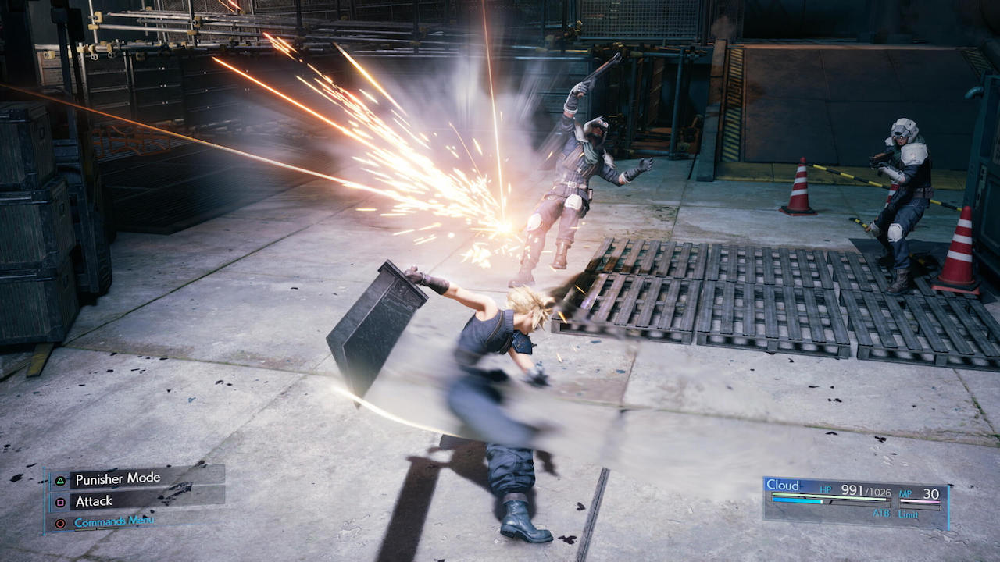

2 stycznia 2020
2020 już został okrzyknięty rokiem jednej gry. Tytuł gry roku też wiadomo z góry komu przyznać, przynajmniej do 16 kwietnia. Wiadomo też, że nowy rok przyniesie nam nową generację konsol a na tą póki co nic oficjalnie nie zostało ogłoszone. Co zatem czeka nas w ostatnim roku tej dekady oprócz nowego dzieła Redów?
Tego tytułu chyba nie trzeba nikomu przedstawiać. Remake wspaniałego dzieła Looking Glass Studios sprzed ćwierćwiecza, w którym wcielamy się w bezimiennego hakera walczącego na stacji kosmicznej Citadel ze sztuczną inteligencją SHODAN. Remake rodził się w bólach. Po udanej kampanii na kickstarterze, gdzie zebrano 1,35 miliona dolarów, datę premiery wielokrotnie przekładano. W pewnym momencie prace całkowicie wstrzymano, ale ostatecznie wydaje się, że wszelkie problemy zostały rozwiązane i w System Shocka zagramy na PC, PS4 i XONE już w pierwszym kwartale.
Kolejny remake, kolejna gra, której nie trzeba nikomu przedstawiać. Kultowy jRPG na pierwsze PlayStation, przez wielu uznawany za najlepszą część serii. W tej odsłonie wcielamy się w grupę eko-terrorystów AVALANCHE, której przewodzi Cloud Strife a nasze zadanie to walka z megakorporacją Shinra kontrolującą niemal cały świat. Można odnieść wrażenie, że ta gra również rodzi się w bólach. Zapowiedziana w 2015 roku początkowo bez konkretnej daty premiery, następnie jakby słuch o nie zaginął, aż wreszcie na ostatnim E3 zaprezentowano grywalną wersję Finala z datą premiery ustaloną na 3 marca 2020 jako exclusive na PS4.

Sequel (a biorąc pod uwagę fabułę to tak naprawdę prequel) ciepło przyjętego action RPGa od Team Ninja ukaże się na PS4 13 marca. Podobnie jak w poprzedniej odsłonie, walczyć będziemy z wrogami przy użyciu całego arsenału rozmaitej broni białej. Tym razem jednak, przemierzając XVI-wieczną Japonię uzyskanym możliwość tymczasowej transformacji w mityczne yokai. W rozgrywce pomoże nam do dwóch innych graczy w trybie kooperacji.
Piąta, a druga po reboocie, odsłona jednej z najsłynniejszych serii FPSów nadejdzie już 20 marca na PC, PS4 i XONE a także jako usługa streamingowa na Google Stadia. O fabule jak zwykle nie ma co się rozpisywać. Po raz kolejny Ziemię nawiedzają hordy demonów z piekła i po raz kolejny my jako ostatnia nadzieja ludzkości ocalimy naszą planetę. Oprócz kampanii dla pojedynczego gracza, będziemy mogli wziąć udział w "Inwazji", tj. dołączać do single-playerowych kampanii innych graczy, by walczyć z nimi jako potwory. Kolejną nowością będzie "Battle Mode", czyli asymetryczny tryb multi, gdzie jeden gracz wcieli się w Doom Slayera a dwóch innych we współpracujące ze sobą demony. Warto wspomnieć, że zamawiając grę przed premierą otrzymamy w gratisie Dooma 64, którego re-release nastąpi w tym samym czasie i na te same platformy co Eternal.
Capcom wystrzelał się już chyba z pomysłów na rozwój fabuły serii Resident Evil i najwyraźniej postanowił nam ją odświeżyć od początku. Na szczęście robi to dobrze: poprzednie dwa remake'i zyskały uznanie zarówno graczy, jak i branżowych krytyków. Dla przypomnienia, przenosimy się przed wydarzenia z drugiej części gry, gdzie jako Jill Valentine będziemy starać wydostać się z Racoon City opanowanego przez epidemię Wirusa-T, w wyniku której większość mieszkańców została zamieniona w zombie. Nowością w stosunku do pierwowzoru z 1999 roku jest asymetryczny tryb multiplayer, gdzie wraz z trójką innych graczy stawimy czoła piątemu kontrolującemu potężnego Mistrza Umysłu (org. MasterMind). Premiera 3 kwietnia na PC, PS4 i XONE.
Trzecia odsłona postapokaliptycznego RPGa będzie pierwszą grą Briana Fargo od czasów gdy jego inXile trafiło pod skrzydła Microsoftu. Wielu graczy obawiało się, że po przejęciu studio będzie tworzyć wyłącznie gry na platformy giganta z Redmond. Na szczęście nowy Wasteland ukaże się 18 maja także na PS4. Pokierujemy losem ostatniego członka Team November, oddziału Strażników Pustkowi. A z piaszczystych krajobrazów Arizony zostaniemy przeniesieni do skutego lodem stanu Kolorado.
O The Last of Us 2 pisałem już 2 lata temu, kiedy stworzyłem poprzednie zestawienie najciekawszych gier na nowy (wtedy 2018) rok, które ukazało się w Pixelu #34. Zajrzałem do tamtej notki i prawdę mówiąc niewiele się przez ten czas zmieniło. Dalej nie jestem w stanie wiele powiedzieć o serii, dalej remaster pierwszej odsłony na PS4 czeka na półce na kupce wstydu. I dalej twórcy z Naughty Dog zapewniają nas, że w grze pokierujemy losami Ellie - drugoplanowej bohaterki oryginalnego The Last of Us w postapokaliptycznych Stanach Zjednoczonych. Premiera póki co ustalona na 29 maja, ale coś mi jednak mówi, że może nas czekać kolejne jej przesunięcie i ostatecznie Sony zrobi z tego tytuł startowy PlayStation 5.
Wygląda na to, że Techland znów będzie miał pecha. Pierwsza część Dying Light z powodzeniem mogłaby zostać najlepszą polską grą roku, gdyby nie fakt, że musiała konkurować z Wiedźminem 3. Miks takich gatunków jak: survival horror z zombiakami, action RPG, open world z widokiem z perspektywy pierwszej osoby i do tego wszystkiego domieszka parkouru po mieście. Dying Light 2 zaoferuje kampanię dla pojedynczego gracza, jak również multiplayer do 4 osób. Brzmi znajomo? To samo oferowała jedynka, z tym że teraz według zapowiedzi wszystkiego ma być więcej i lepiej. Czy to prawda, przekonamy się już wiosną.
Pierwsza na tej liście gra nie będąca sequelem, remasterem ani remake'iem, ale za to kolejnym exclusivem na PS4. W Duchach Cuszimy przenosimy się na tytułową japońską wyspę do 1274 roku, a więc w czasy inwazji Mongołów na Kraj Wschodzącego Słońca. Jako Jin Sakai, ostatni samuraj będziemy uczyć się nowego stylu walki Ducha, aby powstrzymać najeźdźcę i pomścić stratę bliskich. Ghost of Tsushima będzie trzecioosobową grą akcji z elementami skradania i zaoferuje nam otwarty świat, w którym poruszać będziemy się pieszo lub konno. Planowana premiera to wiosna/lato.
Wreszcie coś nie na PlayStation, bo ileż można. Najnowsza szósta już odsłona FPSa z Master Chiefem w roli głównej. Oprócz PC i XONE będzie to tytuł startowy na nową generację konsoli Microsoftu, póki co znaną jako Xbox Series X. Fabuła gry będzie bezpośrednią kontynuacją wydarzeń z Halo 5: Guardians i standardowo dostaniemy kampanie dla pojedynczego gracza, oraz rozbudowany tryb multiplayer. Chyba nie tylko w moim odczuciu gwiazda serii Halo mocno przygasła w ciągu ostatnich kilku lat. Gry nie wywołują już takich emocji jak kiedyś. Można się jednak spodziewać, że Microsoft zrobi wszystko, aby przywrócić jej dawny blask i z przytupem wejść w kolejną generację konsol.
Trailer pierwszego od kilkunastu lat symulatora lotów od Microsoftu sprawił, że wszystkim opadły szczęki. Gra w dużym stopniu będzie oparta na technologii obliczeń w chmurze Microsoft Azure. Świat będzie generowany w czasie rzeczywistym na podstawie ponad dwóch petabajtów danych z Map Bing a także pozyskanych przy użyciu fotogrametrii trójwymiarowych modeli budynków, drzew, terenu itp. Kolejne liczby robiące wrażenie to 2 miliony autentycznych miast i 40 tysięcy rzeczywistych lotnisk. Czy kolejny opad szczęki czeka nas po ujawnieniu wymagań sprzętowych?
Na koniec tytuł z katowickiego Anshar Studios. Jak pewnie zauważyliście w artykule ani razu nie padł tytuł gry CD-Projektu, na który wszyscy czekają. Nie wyłamię się i tym razem a musiałem ją przytoczyć, gdyż Gamedec należy do tego samego gatunku. Wedle zapewnień deweloperów będzie to RPG z izometrycznym widokiem, gdzie przeniesiemy się do XXII wieku i jako prywatny detektyw będziemy tropić zbrodnie popełniane w wirtualnych światach.